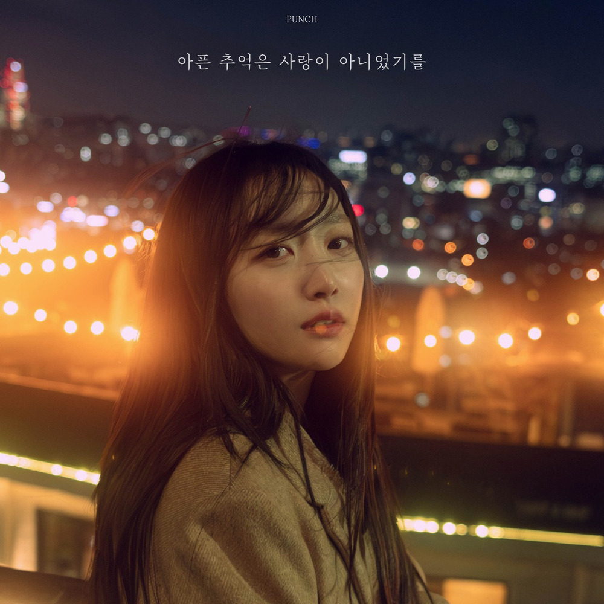

안녕하세요 라보엠입니다.
가수 펀치(Punch)가 2025년 2월 12일, 새 싱글 '아픈 추억은 사랑이 아니었기를'을 발매했습니다. 이번 곡은 2024년 9월 발표한 'Beautiful' 이후 약 5개월 만에 선보이는 신곡입니다.

[펀치] 아픈 추억은 사랑이 아니었기를 - 곡 소개
이번 노래 '아픈 추억은 사랑이 아니었기를'은 서정적인 피아노 선율과 아름다운 스트링이 펀치의 감성적인 보컬과 조화를 이루며 한 편의 슬픈 드라마를 보는 듯한 쓸쓸한 느낌을 자아냅니다. 사랑이라 믿었던 순간들이 결국 아픈 기억으로만 남았다는 내용을 담고 있어, 이별의 아픔을 겪은 이들의 마음을 울리고 있습니다.
뮤직비디오에는 배우 정인선이 주인공으로 출연해 화제를 모았습니다. 정인선은 이별 후 홀로 남겨진 공간에서 공허함을 담담하게 마주하는 장면들을 섬세하게 연기했습니다. 기존의 틀을 깨는 방식으로 영상을 담아내 특별한 여운을 남겼다고 합니다.
작업 참여진
이번 싱글에는 신인 작가이자 프로듀서인 차민호와 함께 tvN 드라마 '도깨비' OST 'Stay with me', '호텔 델루나' OST 'Done for me' 등 다수의 히트곡을 작곡한 이승주가 참여했습니다. 특히 펀치 본인도 작사와 작곡에 참여해 음악적 역량을 한층 더 발휘했습니다.
[펀치] 아픈 추억은 사랑이 아니었기를 - 노래 가사
그대 없는 하루가
그대 없이 채워야 하는 매일이
어색하네요
언젠가는 잊겠죠
되뇌이며 보낸 시간도
얼마나 지났나요
오래도록 머물던
그 마음이 너무 깊어
그리움이 쌓이고
감정이 짙어질 때
꿈처럼 스친 그대와의 사랑
그리움에 젖을 땐
그대 생각이 나죠
아픈 추억은 사랑이 아니었기를
차가워진 목소리
그마저도 내가 만든 것 같아
미안하네요
홀로 남겨져버린
길 잃은 내 모습을 보며
그댈 불러
그리움이 쌓이고
감정이 짙어질 때
꿈처럼 스친 그대와의 사랑
그리움에 젖을 땐
그대 생각이 나죠
아픈 추억은 사랑이 아니었기를
서로 사랑하고 미워하다
결국 흔한 이별을 했던 우리
아직 사랑하지만 상처 주기 싫어서
그댈 보내주려 해
그리움이 쌓이고
감정이 짙어질 때
꿈처럼 스친 그대와의 사랑
네 생각에 젖을 땐
아직 눈물이 나죠
아픈 추억은 사랑이 아니었기를
펀치의 음악 세계
펀치는 2014년 데뷔 이후 독보적인 음색과 호소력 짙은 목소리로 많은 사랑을 받아왔습니다. '밤이 되니까', '헤어지는 중', '가끔 이러다' 등 발표하는 곡마다 음원 차트 1위를 달성하며 성공적인 행보를 이어왔습니다.
OST 여왕으로서의 입지
특히 펀치는 다수의 인기 드라마 OST에 참여하며 '신 OST 요정'이라는 별명을 얻었습니다. '태양의 후예' OST 'Everytime', '도깨비' OST 'Stay With Me', '달의 연인-보보경심 려' OST 'Say Yes', '호텔 델루나' OST 'Done For Me' 등 참여한 OST마다 음원 차트 1위를 석권하며 실력을 입증했습니다.
맺음말
이번 '아픈 추억은 사랑이 아니었기를'을 통해 펀치는 또 한 번 음원 차트 정상에 오를 것으로 기대됩니다. 애절한 음색과 섬세한 감정 표현으로 이미 감성 보컬로서의 입지를 굳건히 한 만큼, 이번 신곡을 통해 어떤 새로운 모습을 보여줄지 팬들의 관심이 집중되고 있습니다. 펀치의 '아픈 추억은 사랑이 아니었기를'은 이별의 아픔을 겪은 이들에게 위로가 되는 한편, 펀치 특유의 감성으로 많은 이들의 마음을 울리는 노래입니다.